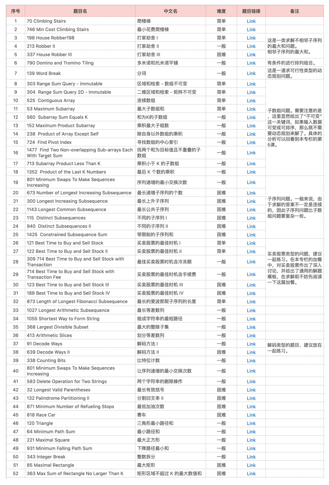
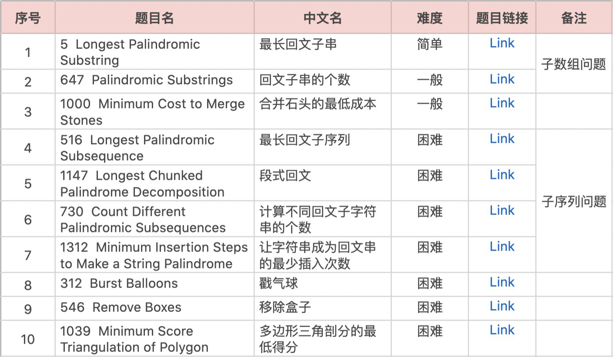
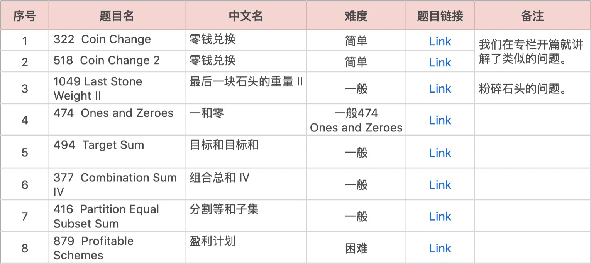
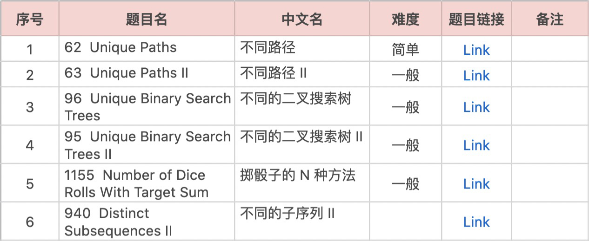
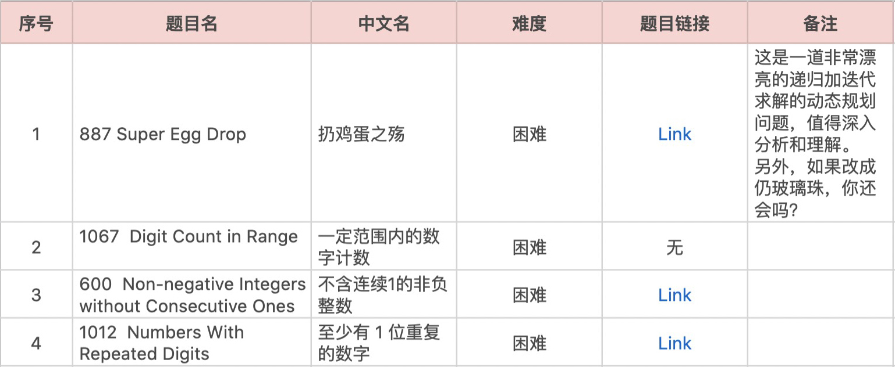

- 00 导读 动态规划问题纷繁复杂，如何系统学习和掌握它？.md.html
- 00 开篇词 为什么大厂都爱考动态规划？.md.html
- 01 硬币找零问题：从贪心算法说起.md.html
- 02 暴力递归：当贪心失效了怎么办？.md.html
- 03 备忘录：如何避免递归中的重复计算？.md.html
- 04 动态规划：完美解决硬币找零.md.html
- 05 面试即正义第一期：什么样的问题应该使用动态规划？.md.html
- 06 0-1背包：动态规划的Hello World.md.html
- 07 完全背包：深入理解背包问题.md.html
- 08 子数组问题：从解决动归问题套路到实践解题思路.md.html
- 09 子序列问题：详解重要的一大类动态规划问题.md.html
- 10 面试即正义第二期：常见的动态规划面试题串烧.md.html
- 11 动态规划新问题1：攻破最长递增子序列问题.md.html
- 12 动态规划新问题2：攻破最大子数组问题.md.html
- 13 动态规划算法设计的关键：最优子结构与状态依赖.md.html
- 14 面试即正义第三期：刷题指南，熟能生巧.md.html
- 15 课程回顾与总结（上）.md.html
- 16 课程回顾与总结（下）.md.html
- 加餐 买卖股票：常见且必考的动态规划面试题.md.html
- 结束语 在我家的后院养长颈鹿.md.html
- 捐赠
14 面试即正义第三期：刷题指南，熟能生巧
你好，我是卢誉声。
自从给出了动态规划的解题模板后，我们就一直沿着其既定的套路在处理各式各样的动归问题。这其实印证了我们在专栏开头所说的一句话：动态规划问题简直就是模板、套路届的典范。
学到今天，其实我们已经对动态规划进行了较为全面的经验式总结，也对技术面试会重点考察的题型进行了深入分析和讲解。这些经验总结在 90% 以上的情况下都是有效的，易于理解，而且十分适合用来应对面试。
诚然，我们在整个专栏中所掌握的解题思路、技巧和最重要的解题模板十分有效而且实用。但是，一定程度的练习还是有必要的，正所谓熟能生巧。而且，动态规划问题总共就那么多，只要稍加练习，相信你就能够轻松攻破技术面试中的动归难关。
在今天的课程里，我将对动态规划题目进行了分类，从难度、类型等维度进行总结。同时，给出刷题建议。话不多说，我们开始吧。
动态规划题目总结表格见链接（请关注题目链接的同学点击此处进行查看）：https://shimo.im/sheets/hrHvGxvRD3xxvvGD/SZhqW
线性问题
一般来说，线性问题是动态规划中最为基础的一类动态规划问题。这是因为其主要特点就是按照我们常说的动态规划概念，即按照问题的规模从小到达进行推导，较大的子问题依赖于较小的子问题 ➕ 当前决策得出。因此，这是一类非常凭直觉且容易求解的动归问题。
虽然我们这么说，但是基础不意味着容易，我在文稿中的表格里列出了常考的题目。这些题目来源于互联网，主要是 LeetCode。对于题目难度的标注，是根据我个人刷题经验总结而来的，因此可能会跟网络上标注的难度有些出入，希望这份表格能对你有所帮助。

在初学动态规划时，通过不断练习线性类型的动态规划问题可以不断加深理解，之后再学习其它类型的动态规划问题就会变得容易许多。
区间问题
除了线性问题以外，还有一种特别容易在技术面试环节考察的题目类型：区间类型问题。事实上，我们在专栏的课程中已经对这类问题做了深入探讨，比如“最长回文子序列”问题就属于这类区间类型的问题。
那么什么是区间呢？从“最长回文子序列”问题就可以看出，当时我们使用了状态参数 \(i\) 和 \(j\) 共同定义了字符串或数组上的一个区间，通过算法计算游走于数组之上，最后根据状态转移方程完成整个问题的推导。因此，所谓区间问题，就是使用多个状态参数来约束数据结构访问的范围，其中区间用两个端点表示。
现在，让我们来看看有哪些区间类型的题目值得练习。

到这里你可能会有疑问，那就是单个字符串或数组的问题不也存在区间吗？比如在最长上升子序列问题中，我们明明就可以用一个 \(DP\[i\]\) 来存储计算的子问题答案。其实，这里面是有显著区别的。
对于单个字符串或数组的问题来说，它其实隐含了区间的起始位置，因为每个子问题的起始位置都是 0，因此我们通过降维实现了只需要一个状态参数的计算。在这种情况下，我们可以考虑它是一个线性问题。
但对于区间类型问题来说，一般我们会定义 \(DP\[i\]\[j\]\)，表示考虑 \(\[i…j\]\) 范围内的元素，原问题的解增加 \(i\)、减小 \(j\) 都可以得到更小规模的子问题，状态转移是按照区间长度由短到长进行推导的。比如“最长回文子序列问题”，其原问题的最终答案可能不是存储在以 0 为起始位置的子序列当中的，正因为我们需要明确的计算出该问题的起始位置，因此状态参数 \(i\) 不能被忽略。在这种情况下，我们需要将其考虑成区间类型的动态规划问题。
由于状态参数的增多，导致了状态存储，即备忘录的维度的增加，势必会提高写出算法代码的难度。通常来说，在填充高维备忘录时，你都需要小心计算方向这个东西。
背包问题
在专栏中，我曾耗费了不少篇幅深入讲解了背包问题，如果你对其有所遗忘，不妨回看第6课和第7课的内容。简单地说，背包问题是一种组合优化的 NP 完全问题。简单的背包问题包括硬币找零，而稍微复杂一些的就包括0-1背包问题、完全背包问题和多重背包问题。
几乎所有的背包问题都可以概括成这样一句话：给定一系列物品，每种物品都有自己的重量和价值两个参数。此时，给定一个有重量上限的背包，求如何选择才能使得物品的总价值最高。
只不过，在技术面试环节，即便考察了背包问题，往往考察的也是其变种。我们曾在第6课就提出过一个粉碎石头的问题，那就是一个背包问题的变种。
现在，我给出你值得关注和练习的背包问题。

对于0-1背包、完全背包和多重背包的问题在 LintCode 上有所体现。我的建议是根据专栏的课程多加练习，如果你能在遇到这类问题时轻松写出状态转移方程，就更好了。
方案总数问题
现在，让我们来看看什么是方案数类型的问题。其实最容易想得到的就是我们曾在第10课中讲解的问题。其中“简单的路径规划”和“带障碍的路径规划”就属于方案数的问题，其原问题要求解的答案就可以是有多少种可行路径。
求方案总数的问题和求可行性（True或False）的问题是可以相互转化的。举个例子，在早期讨论的硬币找零问题，当时我们要求的是：最少需要几枚硬币凑出总金额。
但那个问题显然存在无法用硬币凑出解的情况（至于这种情况，原问题要求返回 -1）。因此，如果我们把原问题修改成：你能否用最少的硬币凑出总金额？这样就变成了一个求可行性问题了。
现在，我给出你值得关注和练习的问题。

复杂问题
最后，我列出了常考的较为复杂的动态规划面试问题，这些问题确实比较困难，但却常常出现在技术面试环节中。因此，你应该花一些时间仔细研读这几道题目，就足以应对复杂的动归技术面试了。

课程总结
在本课中，我列出了在技术面试环节常考的高频动态规划问题。你可以根据题目的类型，难易程度，逐步推进你的“刷题”进程。就像我在开头说的那样，虽然动态规划解题模板非常管用，但一定的练习还是有必要的。
这里列出的题目确实比较多，但我也不希望你去把每道题都解一遍。最重要的还是要掌握以及运用我们从专栏开课就给出的动态规划解题模板。学习并培养解题思路，养成思考的习惯，这才是本课最重要的目的。同时，你也可以将这节课列出的题目当作一个参考文档，它几乎就是你能看到的最全面的动态规划面试问题总结了。
我相信你能够通过这些练习，进一步加深对动态规划的理解，彻底攻破最难技术面试问题这一关！
课后思考
你是否遇到过本课中尚未列出的动态规划技术面试问题？如果有，请列出它，不妨与大家一起分享，共同进步。
期待你的留言。如果今天的内容对你有所帮助，也欢迎把文章分享给你身边的朋友，邀请他一起练习！
© 2019 - 2023 Liangliang Lee. Powered by gin and hexo-theme-book.